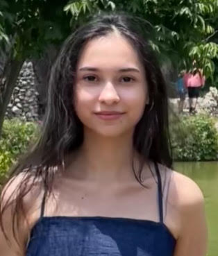

Kayla Garcia
Student
I'm an Indiana University East English student with a concentration in technical, professional, and scientific writing looking for experience within the field to refine my skill sets. I have taken multiple digital and techinal writing classes that have given me a good foundation.
- Education
-
Bachelor of Arts in English
Indiana University East
August 2019 - May 2026
- Skills
-
Soft skills
- • Attentive to details
- • Team player
- • Problem-solving
- • Communication
- • Adaptability
Computer skills
- • Microsoft productivity software
(Word, Excel, etc)
- • Adobe Creative Suite
(Adobe Photoshop, Illustrator, Adobe Express)
- • Web Development
(HTML, CSS)
- Experience
-
Student Assistant
Indiana University Northwest 2023 – 2024
- • Develop and published a biweekly newsletter to boost engagement within the English Department
- • Created flyers advertising English courses and events to all students
- • Help foster a positive relationship between students and staff with regular interaction
- Awards
East Chicago Foundations Scholarship - 2019
Indiana University Northwest English Scholarship - 2019
Allen Austin Memorial Scholarship - 2023